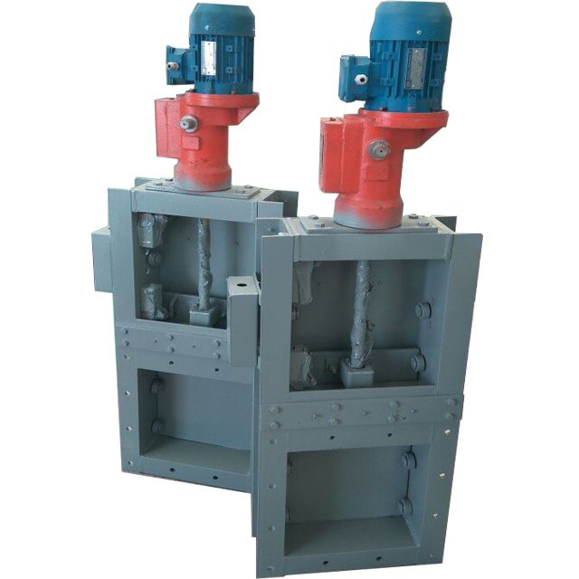

Choosing a valve for bulk solids is nothing like choosing one for liquids. Powders leak through gaps that granules would never fit through; abrasive material chews through soft seals; and a valve that jams in a silo discharge line can halt an entire plant. This guide gives procurement and process engineers a clear framework for specifying the right valve.
In this guide
1. Start with the material, not the valve 2. Match the valve type to the job 3. Size it correctly (DN) 4. Choose actuation & control 5. Sealing, pressure & temperature 6. Common specification mistakes1. Start With the Material, Not the Valve
Before comparing valve models, characterize the bulk solid:
- Particle size & shape: Fine powders (<100 µm) need tight sealing; coarse lumps need a larger port and impact resistance.
- Abrasion: Clinker, ore, and slag demand hardfaced gate plates and replaceable wear liners.
- Moisture & cohesiveness: Wet or sticky material bridges and needs a gate with positive break-away force.
- Temperature: Hot ash or clinker can reach several hundred °C — this rules out standard elastomer seals.
- Explosibility: Combustible dust (grain, coal, wood flour) requires explosion-proof actuators and isolated compartments.
2. Match the Valve Type to the Job
Tianyi's bulk-material valve range spans six core types. Use the table below as a first-pass filter.
| Valve type | Best for | Key trait |
|---|---|---|
| Plug-in valve (electric / pneumatic) | Silo & hopper discharge shut-off | Positive on/off cut-off, leak-tight |
| Flap valve | One-way discharge, gravity flow | Self-closing, simple, low cost |
| Slide gate (manual / powered) | Controlled gravity feed, batching | Linear gate, precise metering |
| Roller gate | Heavy-duty hopper / truck-loading bottom | Handles large lumps, high load |
| Three-way / four-way diverter | Routing flow to multiple bins or lines | Switch paths without stopping |
| Pneumatic E-type gate | Dust-tight isolation, conveying lines | Sealed, automated, minimal leakage |
3. Size It Correctly (DN)
Size is driven by flow rate and material angle of repose. As a rule, the port (DN) should be at least 2.5× the largest particle dimension, and larger still for sticky or high-rate duty. Tianyi valves cover DN150 to DN1000. Under-sizing causes bridging and jamming; over-sizing wastes actuator power and increases leakage area.
4. Choose Actuation & Control
- Manual handwheel: Low cycle count, non-critical isolation, budget-sensitive lines.
- Pneumatic cylinder: Fast, reliable, ideal for automated plants with clean compressed air.
- Electric motor: Precise positioning, easy PLC/DCS integration, good for frequent cycling.
- Hydraulic: High force for very large or heavily loaded gates.
For automated systems, specify position feedback (limit switches / transmitters) so the control room knows open/closed status. All powered valves should include an emergency manual override.
5. Sealing, Pressure & Temperature
- Sealing: Metal-to-metal for abrasive/high-temp duty; soft seals (EPDM / NBR / PTFE) or inflatable seals for fine powder leak-tightness.
- Working pressure: Valve bodies rated up to 1.6 MPa — confirm against your line pressure including surges.
- Temperature: Standard builds cover roughly −20°C to +350°C depending on materials; specify the actual range.
- Explosion protection: For combustible dust atmospheres (Zone 21/22), choose ATEX / IECEx certified actuators and accessories.

Industrial Valves6. Common Specification Mistakes
- Buying on price alone. A cheap gate that leaks fine powder forces constant cleanup and creates a dust hazard.
- Ignoring wear parts. Ask about replaceable liners and lead time for the gate plate — it is the consumable.
- No position feedback. Without it, operators cannot interlock the valve safely with upstream equipment.
- Wrong actuator for the environment. Pneumatics in a freezing plant, or non-ex-rated motors in a dust hazard zone, fail fast.
- Forgetting spare-parts compatibility. Standardized valve families (as offered by Tianyi) simplify long-term maintenance.
Need Help Specifying Your Valves?
Tell us your material, flow rate, pressure, and actuation needs. We return a tailored valve specification — including sizing and explosion-proof options — within 24 hours.
Request a Quote